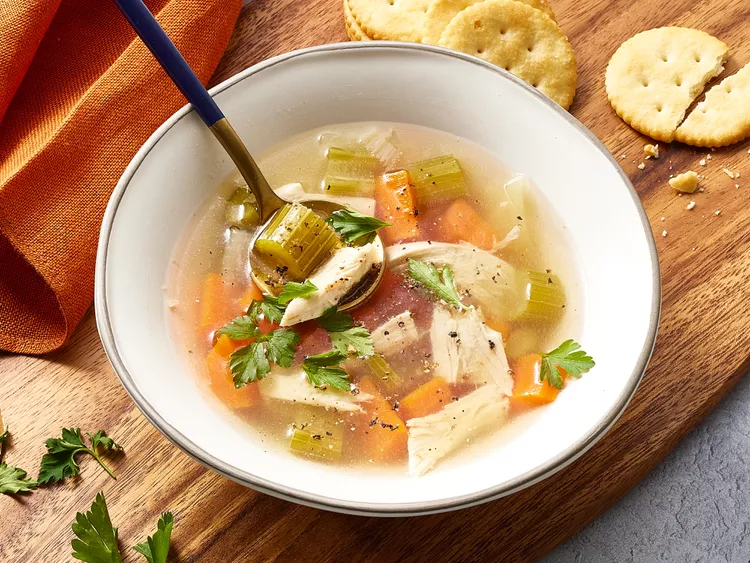

Chicken Soup

Ingredients
- 1 (3 pound) whole chicken
- 4 carrots, halved
- 4 stalks celery, halved
- 1 large onion, halved
- water to cover
- salt and pepper to taste
- 1 teaspoon chicken bouillon granules (Optional)
Directions
- Gather all ingredients.
- Place chicken, carrots, celery, and onion in a large soup pot; add enough cold water to cover. Bring to a boil over medium heat; reduce heat to low and simmer, uncovered, until meat falls off of the bone, about 90 minutes. Skim off foam every so often, as needed.
- Remove chicken from the pot and let sit until cool enough to handle; chop meat into pieces, and discard skin and bones.
- Strain out vegetables, reserving the stock; rinse the soup pot and return the stock to the pot. Chop vegetables into smaller pieces; return chopped chicken and vegetables to the pot.
- Warm soup until heated through; season with salt, pepper, and chicken bouillon to taste.
- Serve and enjoy!
Home